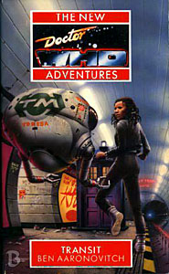

|
Transit
|
BASIC PLOT DOCTOR COMPANIONS MATERIALISATION CIRCUIT PREPARATORY READING CONTINUITY REFERENCES Pg 27 "In her experience the first step into a new environment could kill you faster than a bad-tempered Dalek." Benny's mother was killed by Daleks. Pg 29 "No warning, like an orbital strike, like a missile in terminal phase, sprinting ahead of its sound wave." This is Bernice comparing the Dalek bombardment of Beta Caprisis that killed her mother to the onslaught of whatever is infesting the Stunnel. Pg 33 "In the flat station lights she couldn't tell what colour his eyes were." Reference to the Doctor's eyes changing colour in the novelisations. Pg 40 "A figure standing at a console. It too was transdimensional - something monstrous crammed down into human flesh." Ben Aaronovitch's concept of what the Doctor is here has some similarities with Dave Stone's in Sky Pirates! Pg 52 "So Kadiatu grew up with stories about the metal giants, the wicked machines and the spiders that could think. Later in the vast history archive under Stone Mountain, by the Cayley Plains on Lunar, she learnt that every last story was true." Cybermen (the Invasion) or the K1 Robot (Robot), and the Spiders of Metebelis Three (Planet of the Spiders). Pg 57 "The Doctor dreamt of Ace running under the brilliant blue sky of Heaven. In his dream her eyes were the colour of amber, slotted like a cheetah's" Love and War, Survival. "He'd had a taste for wine once, at least wine of a good vintage; then a taste for beer; then he seemed to remember giving it up in favour of cricket." The Third Doctor (Day of the Daleks), the Fourth Doctor (who got drunk with Azmael, as mentioned in The Twin Dilemma) and the Fifth Doctor. Pgs 57-58 The Doctor watches a silent 3-D projection of an Italian opera adaptation of Battlefield, scripted by Ben Aaronovitch and novelised by Marc Platt. Pg 63 "The human race wasn't due time travel until the botched sigma experiments of the thirtieth century." The Talons of Weng-Chiang. Reference to Daleks. The Doctor flips a two-headed coin (The Three Doctors). Pg 65 "It reminded the Doctor unpleasantly of the fungus on Heaven." Love and War. The opera is "Il Dottore Va in Viaggio, by Marconi Paletti" which roughly translates as "The Doctor in Travel" (or Transit) by Marc Platt, who wrote the Battlefield novelisation. "That's the nineteen-seventies which is what I'd call a data-rich environment. It's straight because there's a continuous linear progression for five years. You were stuck, weren't you?" The UNIT years. Pg 96 "He had spent far too much time in unreal environments recently, the inside of his own mind being the worst." Timewyrm: Revelation and also Love and War, where in Puterspace he is forced to relive his fears mentally. "We are all lost luggage in the Victoria Station of life. In Ghost Light the Doctor says that he loathes bus stations, being full of lost souls and lost luggage. Pg 99 "Vickers All-Body Combat System" There was something like this in Cat's Cradle: Warhead. A Vickers laser sighting helmet thing. Pg 110 "Only the figurehead was indistinct. The underlying figure was female but the features were constantly shifting." Could represent the ambiguous personality of the TARDIS, or the companions. "A man appeared at the galleon's rail, wearing a felt hat and an afghan coat." Marc Platt's future 'Merlin' Doctor from the Battlefield novelisation. This fits the description of Merlin given on p.7 of the Battlefield novelisation. Pg 116 The Doctor thinks in jazz. Silver Nemesis. I was sent to military academy as an orphan. Horses' hooves on the overripe fields of Heaven." Love and War. The italics are direct quotes. Pg 117 "Well, at first I thought I might have picked up an alien spore, one of those Hoothi things" Love and War. Pg 118 "'Don't be alarmed,' said the Doctor. 'She's the one with a gun.'" This is a misquote from The Happiness Patrol. Pg 119 "I never made a stereo for you" Like the one he made for Ace in Silver Nemesis, to replace the one the Daleks blew up in Remembrance of the Daleks. Pg 126 "I heard they got an atmosphere now" This ties in with The Dying Days, where it was revealed that Mars has a breathable atmosphere already (although that may have been Ice Warrior misinformation). Pgs 128 and 181 "I named her after my great-grandmother..." Chief Yembe of Rokoye village has a daughter, Mariatu, who has a relationship with the young lieutenant Lethbridge-Stewart while he served in Sierra Leone some time before the colony becomes independent in 1961. Her son is a soldier, who had another son, also a soldier, who had a daughter who is the historian Kadiatu Lethbridge-Stewart from the novelisation of Remembrance of the Daleks. Her great-grandson is General Yembe Lethbridge-Stewart, who found and raised the Kadiatu featured here. Genetic material from the Lethbridge-Stewarts were used in the genetic matrix of the ubersoldaten that included Kadiatu. (But see Continuity Cock-Ups.) Pg 130 "The house was still there and largely unchanged." The House at Allen Road, last seen bibliologically in Cat's Cradle: Warhead, last seen chronologically in Warchild. "Part of the Victorian greenhouse had succumbed to rust and fallen in" The greenhouse is in a state of disrepair as early as 1997 in The Dying Days. "The satellite dish he had mounted on top was long gone." The Doctor used a satellite dish in Cat's Cradle: Warhead to keep track of his plan. "The stables had been mended and there was a muddy trail leading away from the doors." This could mean the garage in which a car Ace had been working on blew up in Cat's Cradle: Warhead. The original stables are later mentioned on page 21 of Warlock. Pg 131 "Right at the back of the bottom shelf were a pair of grey deodorant spray cans." Ace's Nitro-Nine. Pg 133 Reference to Cybermen. Pg 134 "I'm facing hostile software. At least it's not in my head this time." Timewyrm: Revelation. "Orchards waiting on the hills to the west." The orchards pop up again in The Dying Days. Pg 164 "You should see her on horseback" Has the Doctor seen Bernice on a horse by this point yet? Pg 181 "'Light the blue touch paper,' said the Doctor, walking back to join Kadiatu, 'and retire to a safe distance.' The Doctor says this in Brain of Morbius as well. Pg 186 "On Terra she could understand it." In no other book does Bernice refer to 26th-Century Earth as Terra. It's always just Earth. Pg 187 "You'll have to take the East Olympus Loop from Carver" In Beige Planet Mars the Martian South Pole Terminus is called Carter Station. Pg 188 "A mantra she'd picked up while digging on Proxima IV." In The Face-Eater the first human colony in another solar system was on Proxima II, established in 2128. Pg 204 "I was also in Mesopotamia in the time of Gilgamesh and I've visited all three Atlantises." Timewyrm: Genesys, The Underwater Menace, The Daemons, The Time Monster. "'Basket,' she heard herself say. 'Old woman in a basket over a big pit. Something's wrong with her eye. I think she's a witch.'" Cat's Cradle: Time's Crucible. The Pythia diverted the Gallifreyans' procreative powers to Earth, which is one reason why it's always being invaded, why it becomes a dominant world in the galaxy's future and why the Doctor's so interested in it. Pg 206 "The Silurians felt that it was the manifestation of humanity's deep-seated guilt complex about their ruthless exploitation of the homeworld. But then, the Silurians said that about everything." First NA appearence of the rehabilitated Earth Reptiles. "The Role of the Butler Institute in the Terran Post-Nuclear Period." ButlerCorp was tied up in the mind-computer experiments in 2005 in Cat's Cradle: Warhead and was part of the Brotherhood that shepherded human psychic abilities from about 1800 until 2981 in So Vile A Sin. Eurogen Butler was a major expansionist company that left Earth to take over planets for fun and profit in Deceit and Another Girl, Another Planet. And the Spinward Corporation was just the legacy of all that. Spinward was sunk in Deceit in 2573 - it hasn't happened yet for Bernice. "There had been some interesting stuff about youth gangs and eco-terrorists." Sounds a lot like Cat's Cradle: Warhead. Pg 208 "You are the human response to him." How the ersatz Benny put that together we don't know, but it's right; one of the ultimate results of the Pythia's curse. Check p.237. (Text submitted by Paul Andinach) Given that the ersatz Benny is dead at this point, and the way the conversation starts mirroring Kadiatu's dreams, my guess is that everything from "The ersatz Benny twitched..." to "...and full of secrets" is a hallucination of some kind. Kadiatu's unconscious mind grabbing an opportunity to clue her in on some stuff or something. Pg 220 "The Doctor wished he'd paid attention when he'd been on that Australian beach." If he was watching people surf, then he doesn't mean the Australian beach in The Enemy of the World. Pg 227 "In that case I'll call you Fred." Like Romanadvoratrelundar, The Ribos Operation. Pg 229 "The entire artron energy reserve of the TARDIS hit him right between the shoulder blades." Artron energy is a weird Time Lord energy source that was introduced in The Deadly Assassin. Pg 232 "The Doctor suspected that his memory was too accurate for the Cheetah people to be reliable." Survival. Pg 234 Reference to a yeti. The Doctor creates a groups of simulated Aces for defence. Pg 240 "To their eyes, the fearsome Reds were slowly transforming into Daleks and the Yellows into Cybermen. When the squadfron of Blues arrived they took the form of clowns with sinister smiles." Remembrance of the Daleks, Silver Nemesis, The Greatest Show in the Galaxy. Pg 255 Reference to Daleks. Pg 256 "'Can't we be partners?' she'd asked him on Heaven." Love and War. SWEAR WORDS AND SEX Pg 44 "The bitter nuts helped keep her awake and take the semen taste out of her mouth." Smithers, have the Rolling Stones killed. Pg 45 "'Fuck off,' said Roberta to each of them in turn." Two. Pg 70 "Those fucks at KGB won't say much but they did confirm that a classified number of passengers got greased on the outbound Central Line platforms." Three. Pg 71 "The fucking V Soc." Four. Pg 83 "'What's the matter,' Dogface had said, 'you never seen two trains fucking before?'" Five. This is also the only time it's used to describe sex. Pg 117 "Because I've been taken over by a fucking alien intelligence" Six. But very witty. Pg 132 "It was the sound of children laughing." Sex. Pg 151 "They'd made love agian, with him on top this time." Sex again. Pg 201 "He called them a bunch of FNGs and didn't rate their chances in a real fight." Fucking No-Goods. Pg 202 "I think someone's fucking with our signalling" Seven. Pg 212 "'Fuck no,' said Ming.'But I wouldn't mind some of whatever it is you're on.'" Eight. Pg 229 "What the fuck was that?" Nine. Pg 261 "What the fuck are you doing?" Ten. OLD FRIENDS AND OLD ENEMIES The house on Allen Rd. Although they don't appear, the Ice Warriors are discussed in great detail, including reference to the thousand day war. The Brigadier appears in flashback (pages 181-184) Pg 233 "It was a large animal, half a metre long with glistening silver fur as if it had been dipped in mercury." This is the cat from the Cat's Cradle arc. NEW FRIENDS AND NEW ENEMIES Old Sam has a cameo (actually just a reprise of his last scene here) in GodEngine. FLORANCE, who turns up in SLEEPY and is mentioned in Seeing I. Ming, Dogface, Credit Card, Zamina, Francine, Lambada and Fred, the
intelligence that takes over the Stunnel network.
CONTINUITY COCK-UPS PLUGGING THE HOLES [Fan-wank theorizing of how to fix continuity cock-ups] FEATURED ALIEN RACES FEATURED LOCATIONS Olympus Mons, when Kadiatu was a child (pg 123). Royoke village, Sierra Leone some time before the colony becomes independent in 1961 (pgs 181-184). The Butterfly Wing base, 2112 (pg 260) . IN SUMMARY - Robert Smith? |
|
 |